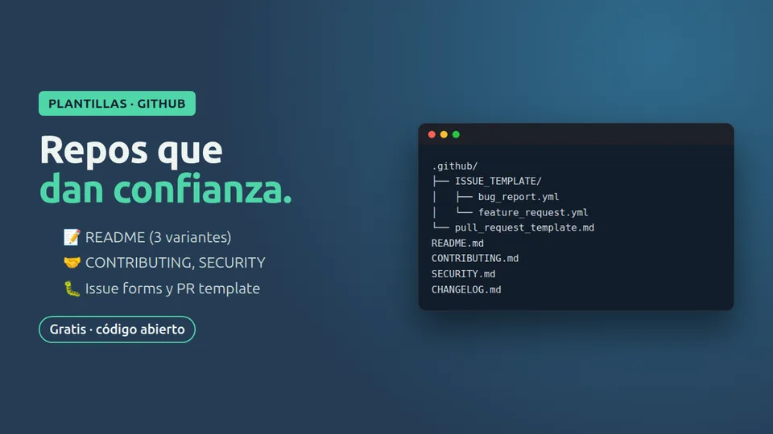

Free · open source · MIT
Plantillas de documentación para GitHub
Lo básico para que tu repositorio dé confianza: README, guía de contribución y formularios de issues.

The problem
Un repositorio sin README ni guía de contribución da poca confianza: la gente no sabe cómo instalarlo, abre issues sin datos y manda pull requests a su manera. Escribir todo eso desde cero da pereza y se queda para después. Estas plantillas en español traen un README para librería, un CONTRIBUTING.md con flujo de ramas, un formulario de issues para errores y una plantilla de pull request con checklist.
What’s included
- README para librería
- CONTRIBUTING.md con flujo de ramas y Conventional Commits
- Formulario de issues para errores
- Plantilla de pull request con checklist
Install it in one minute
git clone https://github.com/carlosp5751258-lgtm/ctrlia-plantillas-docs-github.git
cp -r ctrlia-plantillas-docs-github/.github .
cp ctrlia-plantillas-docs-github/CONTRIBUTING.md .
cp ctrlia-plantillas-docs-github/readme/README-libreria.md README.md